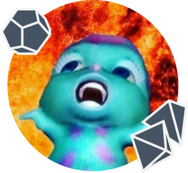

Welkom bij Echo, de verbindende kracht in Geleen!
Echo is een initiatief van twee gedreven studenten van de opleiding Communicatie en Multimedia Design (CMD) aan Hogeschool Zuyd. Ons doel? Het samenbrengen van mensen in Geleen door hen te verbinden via gedeelde passies en interesses. Bij Echo richten we ons specifiek op niche interesses zoals Dungeons and Dragons, anime, gaming en andere bordspellen.
In onze levendige Discord-server creëren we een gemeenschap waar gelijkgestemden elkaar kunnen vinden en samen hun hobby's kunnen beoefenen. Woon je in Geleen en ben je een fan van Dungeons and Dragons, maar ken je niemand om mee te spelen? Bij Echo vind je snel andere enthousiastelingen die hetzelfde probleem hebben. Samen kunnen jullie nieuwe campaigns starten, avonturen beleven en vriendschappen opbouwen.
Echo is de plek waar jouw niche interesse centraal staat en waar je altijd iemand vindt die jouw passie deelt. Doe mee en ontdek een wereld van nieuwe mogelijkheden en connecties. Sluit je aan bij Echo en laat je stem horen in Geleen!
Kom bij onze community!
Ik ben Boops en een paar mijn mijn hobby’s zijn D&D, dino’s en cosplay.
(Dit zijn wij)
Ik ben iDreams, een paar van mijn hobby’s zijn tekenen, gaming en D&D.
